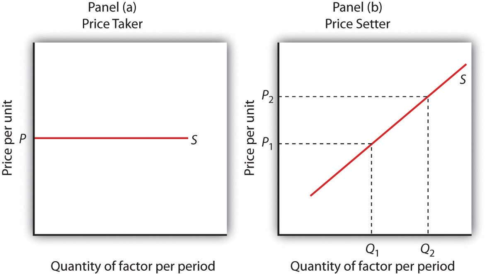
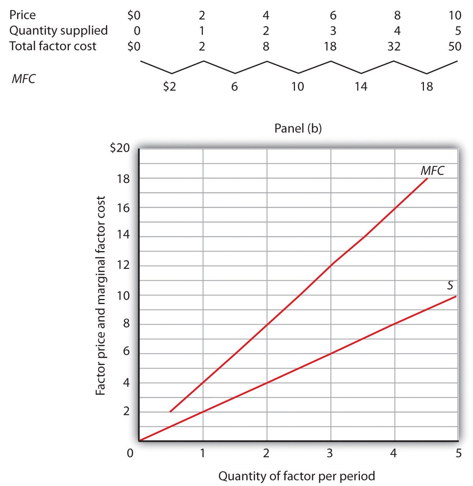
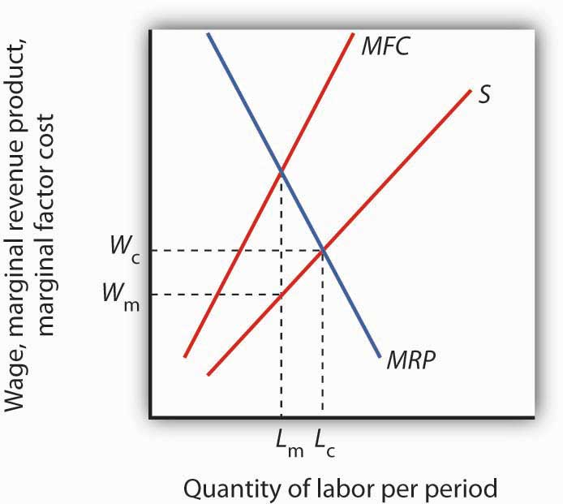

On October 30, 2004, Columbus Blue Jackets’ center Todd Marchant would ordinarily have been getting ready to open the 2004–2005 National Hockey League (NHL) season before a packed house in a game against the Dallas Stars in Dallas. Instead, he was home and devoting his season to coaching his six-year-old daughter’s hockey team.
Mr. Marchant was home because the Commissioner of the NHL, Gary Bettman, had ordered players locked out on September 15, when training camp was scheduled to begin and when the contract between the NHL and the Players Association expired. Mr. Bettman had warned for five years that he would take the drastic action of shutting down the hockey season unless owners and players could agree on a system to limit player salaries. In the NHL, player salaries amounted to 75% of team revenues. By contrast, player salaries represented 64% of team revenues in the National Football League and 59% of revenues in the American Basketball Association. Mr. Bettman contended that the league’s 30 franchises had lost a combined $500 million in the previous two years.
Players and owners alike had a great deal of money at stake. The NHL was selling 90% of its seats available during the regular season and generating $2.1 billion per year in revenues. “No one likes losing money, but this year everyone involved in hockey may be losing something,” Mr. Marchant told Business Week. Mr. Marchant lost $2.9 million as a result of the lockout.
Mr. Bettman and the owners were holding out for a “salary cap” that would limit player salaries to 53% of team revenues. According to Mark Hyman of Business Week, that would reduce average salaries in hockey from $1.8 million to $1.3 million. “We’re not going to play under a salary cap; we’re dead set against it,” Brad Lucovich, defenseman for Dallas, told Business Week. But the owners were similarly adamant. They were perfectly willing to forego revenues from the season—and to avoid paying player salaries—to establish a salary cap.
Were the owners being greedy? Or were the players at fault? For economists, the notions of “greed” or “blame” were not the issue. Economists assume that all individuals act in their own self-interest. In the case of the hockey lockout, which eliminated the 2004–05 season, players and owners were in a face-off in which a great deal of money was at stake. Owners had tried to establish a cap in 1994; the resulting labor dispute shut down half the season. Ultimately, the players prevailed and no caps were imposed. The 2005 lockout ended in nearly the opposite way. In the new contract, player salaries are capped and may not exceed 54% of league revenues.Mark Hyman, “An Entire Season in the Penalty Box?” Business Week, 3906 (November 1, 2004): 94–95; David Fay, “Game On: NHL Lockout Finally Over,” The Washington Times, July 14, 2005, p. C1.To most observers, it seemed that the team owners had won this battle.
The National Football League lockout of 2011 lasted more than four months. The issues were similar—players’ share of league revenues, salary caps, and free agency. Both sides could point to victories in the settlement that was reached. Fortunately for the fans, the dispute took placing during the off-season.
Revolutionary changes in the rules that govern relations between the owners of sports teams and the players they hire have produced textbook examples of the economic forces at work in the determination of wages in imperfectly competitive markets. Markets for labor and other factors of production can diverge from the conditions of perfect competition in several ways, all of which involve price-setting behavior. Firms that purchase inputs may be price setters. Suppliers of inputs may have market power as well: a firm may have monopoly control over some key input or input suppliers may band together to achieve market power. Workers may organize unions. Suppliers of services, such as physicians and hairdressers, have formed associations that exert power in the marketplace.
This chapter applies the marginal decision rule to the analysis of imperfectly competitive markets for labor and other factors of production. Imperfect competition in these markets generally results in a reduction in the quantity of an input used, relative to the competitive equilibrium. The price of the input, however, could be higher or lower than in perfect competition, depending on the nature of the market structure involved.
We have seen that market power in product markets exists when firms have the ability to set the prices they charge, within the limits of the demand curve for their products. Depending on the factor supply curve, firms may also have some power to set prices they pay in factor markets.
A firm can set price in a factor market if, instead of a market-determined price, it faces an upward-sloping supply curve for the factor. This creates a fundamental difference between price-taking and price-setting firms in factor markets. A price-taking firm can hire any amount of the factor at the market price; it faces a horizontal supply curve for the factor at the market-determined price, as shown in Panel (a) of Figure 14.1 "Factor Market Price Takers and Price Setters". A price-setting firm faces an upward-sloping supply curve such as S in Panel (b). It obtains Q1 units of the factor when it sets the price P1. To obtain a larger quantity, such as Q2, it must offer a higher price, P2.
Figure 14.1 Factor Market Price Takers and Price Setters
A price-taking firm faces the market-determined price P for the factor in Panel (a) and can purchase any quantity it wants at that price. A price-setting firm faces an upward-sloping supply curve S in Panel (b). The price-setting firm sets the price consistent with the quantity of the factor it wants to obtain. Here, the firm can obtain Q1 units at a price P1, but it must pay a higher price per unit, P2, to obtain Q2 units.
Consider a situation in which one firm is the only buyer of a particular factor. An example might be an isolated mining town where the mine is the single employer. A market in which there is only one buyer of a good, service, or factor of production is called a monopsonyA market in which there is only one buyer of a good, service, or factor of production.. Monopsony is the buyer’s counterpart of monopoly. Monopoly means a single seller; monopsony means a single buyer.
Assume that the suppliers of a factor in a monopsony market are price takers; there is perfect competition in factor supply. But a single firm constitutes the entire market for the factor. That means that the monopsony firm faces the upward-sloping market supply curve for the factor. Such a case is illustrated in Figure 14.2 "Supply and Marginal Factor Cost", where the price and quantity combinations on the supply curve for the factor are given in the table.
Figure 14.2 Supply and Marginal Factor Cost
The table gives prices and quantities for the factor supply curve plotted in the graph. Notice that the marginal factor cost curve lies above the supply curve.
Suppose the monopsony firm is now using three units of the factor at a price of $6 per unit. Its total factor cost is $18. Suppose the firm is considering adding one more unit of the factor. Given the supply curve, the only way the firm can obtain four units of the factor rather than three is to offer a higher price of $8 for all four units of the factor. That would increase the firm’s total factor cost from $18 to $32. The marginal factor cost of the fourth unit of the factor is thus $14. It includes the $8 the firm pays for the fourth unit plus an additional $2 for each of the three units the firm was already using, since it has increased the prices for the factor to $8 from $6. The marginal factor cost (MFC) exceeds the price of the factor. We can plot the MFC for each increase in the quantity of the factor the firm uses; notice in Figure 14.2 "Supply and Marginal Factor Cost" that the MFC curve lies above the supply curve. As always in plotting in marginal values, we plot the $14 midway between units three and four because it is the increase in factor cost as the firm goes from three to four units.
The marginal decision rule, as it applies to a firm’s use of factors, calls for the firm to add more units of a factor up to the point that the factor’s MRP is equal to its MFC. Figure 14.3 "Monopsony Equilibrium" illustrates this solution for a firm that is the only buyer of labor in a particular market.
Figure 14.3 Monopsony Equilibrium
Given the supply curve for labor, S, and the marginal factor cost curve, MFC, the monopsony firm will select the quantity of labor at which the MRP of labor equals its MFC. It thus uses Lm units of labor (determined by at the intersection of MRP and MFC) and pays a wage of Wm per unit (the wage is taken from the supply curve at which Lm units of labor are available). The quantity of labor used by the monopsony firm is less than would be used in a competitive market (Lc); the wage paid, Wm, is lower than would be paid in a competitive labor market.
The firm faces the supply curve for labor, S, and the marginal factor cost curve for labor, MFC. The profit-maximizing quantity is determined by the intersection of the MRP and MFC curves—the firm will hire Lm units of labor. The wage at which the firm can obtain Lm units of labor is given by the supply curve for labor; it is Wm. Labor receives a wage that is less than its MRP.
If the monopsony firm was broken up into a large number of small firms and all other conditions in the market remained unchanged, then the sum of the MRP curves for individual firms would be the market demand for labor. The equilibrium wage would be Wc, and the quantity of labor demanded would be Lc. Thus, compared to a competitive market, a monopsony solution generates a lower factor price and a smaller quantity of the factor demanded.
There is a close relationship between the models of monopoly and monopsony. A clear understanding of this relationship will help to clarify both models.
Figure 14.4 "Monopoly and Monopsony" compares the monopoly and monopsony equilibrium solutions. Both types of firms are price setters: The monopoly is a price setter in its product market; the monopsony is a price setter in its factor market. Both firms must change price to change quantity: The monopoly must lower its product price to sell an additional unit of output, and the monopsony must pay more to hire an additional unit of the factor. Because both types of firms must adjust prices to change quantities, the marginal consequences of their choices are not given by the prices they charge (for products) or pay (for factors). For a monopoly, marginal revenue is less than price; for a monopsony, marginal factor cost is greater than price.
Figure 14.4 Monopoly and Monopsony

The graphs and the table provide a comparison of monopoly and monopsony.
Both types of firms follow the marginal decision rule: A monopoly produces a quantity of the product at which marginal revenue equals marginal cost; a monopsony employs a quantity of the factor at which marginal revenue product equals marginal factor cost. Both firms set prices at which they can sell or purchase the profit-maximizing quantity. The monopoly sets its product price based on the demand curve it faces; the monopsony sets its factor price based on the factor supply curve it faces.
Although cases of pure monopsony are rare, there are many situations in which buyers have a degree of monopsony power. A buyer has monopsony powerSituation in which a buyer faces an upward-sloping supply curve for a good, service, or factor of production. if it faces an upward-sloping supply curve for a good, service, or factor of production.
For example, a firm that accounts for a large share of employment in a small community may be large enough relative to the labor market that it is not a price taker. Instead, it must raise wages to attract more workers. It thus faces an upward-sloping supply curve and has monopsony power. Because buyers are more likely to have monopsony power in factor markets than in product markets, we shall focus on those.
The next section examines monopsony power in professional sports.
Professional sports provide a setting in which economists can test theories of wage determination in competitive versus monopsony labor markets. In their analyses, economists assume professional teams are profit-maximizing firms that hire labor (athletes and other workers) to produce a product: entertainment bought by the fans who watch their games and by other firms that sponsor the games. Fans influence revenues directly by purchasing tickets and indirectly by generating the ratings that determine television and radio advertising revenues from broadcasts of games.
In a competitive system, a player should receive a wage equal to his or her MRP—the increase in team revenues the player is able to produce. As New York Yankees owner George Steinbrenner once put it, “You measure the value of a ballplayer by how many fannies he puts in the seats.”
The monopsony model, however, predicts that players facing monopsony employers will receive wages that are less than their MRPs. A test of monopsony theory, then, would be to determine whether players in competitive markets receive wages equal to their MRPs and whether players in monopsony markets receive less.
Since the late 1970s, there has been a major shift in the rules that govern relations between professional athletes and owners of sports teams. The shift has turned the once monopsonistic market for professional athletes into a competitive one. Before 1977, for example, professional baseball players in the United States played under the terms of the “reserve clause,” which specified that a player was “owned” by his team. Once a team had acquired a player’s contract, the team could sell, trade, retain, or dismiss the player. Unless the team dismissed him, the player was unable to offer his services for competitive bidding by other teams. Moreover, players entered major league baseball through a draft that was structured so that only one team had the right to bid for any one player. Throughout a player’s career, then, there was always only one team that could bid on him—each player faced a monopsony purchaser for his services to major league baseball.
Conditions were similar in other professional sports. Many studies have shown that the salaries of professional athletes in various team sports fell far short of their MRPs while monopsony prevailed.
When the reserve clauses were abandoned, players’ salaries shot up—just as economic theory predicts. Because players could offer their services to other teams, owners began to bid for their services. Profit-maximizing owners were willing to pay athletes their MRPs. Average annual salaries for baseball players rose from about $50,000 in 1975 to nearly $1.4 million in 1997. Average annual player salaries in men’s basketball rose from $109,000 in 1976 to $2.24 million in 1998. Football players worked under an almost pure form of monopsony until 1989, when a few players were allowed free agency status each year. In 1993, when 484 players were released to the market as free agents, those players received pay increases averaging more than 100%. Under the NFL collective bargaining agreement in effect in 1998, players could become unrestricted free agents if they had been playing for four years. There were 305 unrestricted free agents (out of a total player pool of approximately 1,700) that year. About half signed new contracts with their old teams while the other half signed with new teams. Table 14.1 "The Impact of Free Agency" illustrates the impact of free agency in four professional sports.
Table 14.1 The Impact of Free Agency
| Player Salaries As Percentage of Team Revenues | ||||
|---|---|---|---|---|
| MLB | NBA | NFL | NHL | |
| 1970–73 | 15.9 | 46.1 | 34.4 | 21.3 |
| 1998 | 48.4 | 54.2 | 55.4 | 58.4 |
Free agency has increased player share of total revenues in each of the major men’s team sports. Table 14.1 "The Impact of Free Agency" gives player salaries as a percentage of team revenues for major league baseball (MLB), the National Basketball Association (NBA), the National Football League (NFL) and the National Hockey League (NHL) during the 1970–1973 period that players in each league worked under monopsony conditions and in 1998, when players in each league had gained the right of free agency.
Source: Gerald W. Scully, “Player Salary Share and the Distribution of Player Earnings,” Managerial and Decision Economics, 25 (2004): 77–86.
Given the dramatic impact on player salaries of more competitive markets for athletes, events such as the 2004–2005 lockout in hockey came as no surprise. The agreement between the owners of hockey teams and the players in 2005 to limit the total payroll of each team reinstates some of the old monopsony power of the owners. Players had a huge financial stake in resisting such attempts.
A firm that has a dominant position in a local labor market may have monopsony power in that market. Even if a firm does not dominate the total labor market, it may have monopsony power over certain types of labor. For example, a hospital may be the only large employer of nurses in a local market, and it may have monopsony power in employing them.
Colleges and universities generally pay part-time instructors considerably less for teaching a particular course than they pay full-time instructors. In part, the difference reflects the fact that full-time faculty members are expected to have more training and are expected to contribute far more in other areas. But the monopsony model suggests an additional explanation.
Part-time instructors are likely to have other regular employment. A university hiring a local accountant to teach a section of accounting does not have to worry that that person will go to another state to find a better offer as a part-time instructor. For part-time teaching, then, the university may be the only employer in town—and thus able to exert monopsony power to drive the part-time instructor’s wage below the instructor’s MRP.
Monopsony power may also exist in markets for factors other than labor. The military in different countries, for example, has considerable monopsony power in the market for sophisticated military goods. Major retailers often have some monopsony power with respect to some of their suppliers. Sears, for example, is the only wholesale buyer of Craftsman brand tools. One major development in medical care in recent years has been the emergence of managed care organizations that contract with a large number of employers to purchase medical services on behalf of employees. These organizations often have sufficient monopsony power to force down the prices charged by providers such as drug companies, physicians, and hospitals. Countries in which health care is provided by the government, such as Canada and the United Kingdom, are able to exert monopsony power in their purchase of health care services.
Whatever the source of monopsony power, the expected result is the same. Buyers with monopsony power are likely to pay a lower price and to buy a smaller quantity of a particular factor than buyers who operate in a more competitive environment.
Suppose a firm is the only employer of labor in an isolated area and faces the supply curve for labor suggested by the following table. Plot the supply curve. To compute the marginal factor cost curve, compute total factor cost and then the values for the marginal factor cost curve (remember to plot marginal values at the midpoints of the respective intervals). (Hint: follow the example of Figure 14.2 "Supply and Marginal Factor Cost".) Compute MRP and plot the MRP curve on the same graph on which you have plotted supply and MFC.
Now suppose you are given the following data for the firm’s total product at each quantity of labor. Compute marginal product. Assume the firm sells its product for $10 per unit in a perfectly competitive market. Compute MRP and plot the MRP curve on the same graph on which you have plotted supply and MFC. Remember to plot marginal values at the midpoints of the respective axes.
How much labor will the firm employ? What wage will it pay?
Professional athletes have not always enjoyed the freedom they have today to seek better offers from other teams. Before 1977, for example, baseball players could deal only with the team that owned their contract—one that “reserved” the player to that team. This reserve clause gave teams monopsony power over the players they employed. Similar restrictions hampered player mobility in men’s football, basketball, and hockey.
Gerald Scully, an economist at the University of Texas at Dallas, estimated the impact of the reserve clause on baseball player salaries. He sought to demonstrate that the player salaries fell short of MRP. Mr. Scully estimated the MRP of players in a two-step process. First, he studied the determinants of team attendance. He found that in addition to factors such as population and income in a team’s home city, the team’s win-loss record had a strong effect on attendance. Second, he examined the player characteristics that determined win-loss records. He found that for hitters, batting average was the variable most closely associated with a team’s winning percentage. For pitchers, it was the earned-run average—the number of earned runs allowed by a pitcher per nine innings pitched.
With equations that predicted a team’s attendance and its win-loss record, Mr. Scully was able to take a particular player, describe him by his statistics, and compute his MRP. Mr. Scully then subtracted costs associated with each player for such things as transportation, lodging, meals, and uniforms to obtain the player’s net MRP. He then compared players’ net MRPs to their salaries.
Mr. Scully’s results, displayed in the table below, show net MRP and salaries, estimated on a career basis, for players he classified as mediocre, average, and star-quality, based on their individual statistics. For average and star-quality players, salaries fell far below net MRP, just as the theory of monopsony suggests.
| Career Net MRP | Career Salary | Salary As % of net MRP | |
|---|---|---|---|
| Hitters | |||
| Mediocre | −$129,300 | $60,800 | |
| Average | 906,700 | 196,200 | 22 |
| Star | 3,139,100 | 477,200 | 15 |
| Pitchers | |||
| Mediocre | −53,600 | 54,800 | |
| Average | 1,119,200 | 222,500 | 20 |
| Star | 3,969,600 | 612,500 | 15 |
The fact that mediocre players with negative net MRPs received salaries presents something of a puzzle. One explanation could be that when they were signed to contracts, these players were expected to perform well, so their salaries reflected their expected contributions to team revenues. Their actual performance fell short, so their wages exceeded their MRPs. Another explanation could be that teams paid young players more than they were expected to contribute to revenues early in their careers in hopes that they would develop into profitable members of the team. In any event, Mr. Scully found that the costs of mediocre players exceeded their estimated contribution to team revenues, giving them negative net MRPs.
In 1977, a lawsuit filed by several baseball players resulted in the partial dismantling of the reserve clause. Players were given the right, after six years with a team, to declare themselves “free agents” and offer their services to other teams. Player salaries quickly rose. The accompanying table shows the pitchers that became free agents in 1977, their estimated net marginal revenue products, and their 1977 salaries. As you can see, salaries for pitchers came quite close to their net MRPs.
| Pitcher | Net MRP | 1977 Salary |
|---|---|---|
| Doyle Alexander | $166,203 | $166,677 |
| Bill Campbell | $205,639 | $210,000 |
| Rollie Fingers | $303,511 | $332,000 |
| Wayne Garland | $282,091 | $230,000 |
| Don Gullett | $340,846 | $349,333 |
The same movement toward giving players greater freedom to deal with other teams occurred in the National Football League (NFL), the National Basketball Association (NBA), and the National Hockey League (NHL). The result in every case was the same: player salaries rose both in absolute terms and as a percentage of total team revenues. Table 14.1 "The Impact of Free Agency" gives player salaries as a percentage of total team revenues in the period 1970–73 and in 1998 for men’s baseball (MLB), basketball, football, and hockey.
The greatest gains came in baseball, which had the most restrictive rules against player movement. Hockey players, too, ended up improving their salaries greatly. By 2004, their salaries totaled 75% of team revenues. The smallest gains came in basketball, where players already had options. The American Basketball Association was formed; it ultimately became part of the National Basketball Association. Basketball players also had the alternative of playing in Europe. But, the economic lesson remains clear: any weakening of the monopsony power of teams results in gains in player salaries.
Sources: Gerald Scully, “Pay and Performance in Major League Baseball,” American Economic Review, 64 (2) (December 1974): 915–30. Gerald W. Scully, “Player Salary Share and the Distribution of Player Earnings,” Managerial and Decision Economics, 25 (2004): 77–86.
The completed tables are shown in Panel (a). Drawing the supply (S), MFC, and MRP curves, we have Panel (b). The monopsony firm will employ three units of labor per day (the quantity at which MRP = MFC) and will pay a wage taken from the supply curve: $30 per day.
We have seen that wages will be lower in monopsony than in otherwise similar competitive labor markets. In a competitive market, workers receive wages equal to their MRPs. Workers employed by monopsony firms receive wages that are less than their MRPs. This fact suggests sharply different conclusions for the analysis of minimum wages in competitive versus monopsony conditions.
In a competitive market, the imposition of a minimum wage above the equilibrium wage necessarily reduces employment, as we learned in the chapter on perfectly competitive labor markets. In a monopsony market, however, a minimum wage above the equilibrium wage could increase employment at the same time as it boosts wages!
Figure 14.5 "Minimum Wage and Monopsony" shows a monopsony employer that faces a supply curve, S, from which we derive the marginal factor cost curve, MFC. The firm maximizes profit by employing Lm units of labor and paying a wage of $4 per hour. The wage is below the firm’s MRP.
Figure 14.5 Minimum Wage and Monopsony

A monopsony employer faces a supply curve S, a marginal factor cost curve MFC, and a marginal revenue product curve MRP. It maximizes profit by employing Lm units of labor and paying a wage of $4 per hour. The imposition of a minimum wage of $5 per hour makes the dashed sections of the supply and MFC curves irrelevant. The marginal factor cost curve is thus a horizontal line at $5 up to L1 units of labor. MRP and MFC now intersect at L2 so that employment increases.
Now suppose the government imposes a minimum wage of $5 per hour; it is illegal for firms to pay less. At this minimum wage, L1 units of labor are supplied. To obtain any smaller quantity of labor, the firm must pay the minimum wage. That means that the section of the supply curve showing quantities of labor supplied at wages below $5 is irrelevant; the firm cannot pay those wages. Notice that the section of the supply curve below $5 is shown as a dashed line. If the firm wants to hire more than L1 units of labor, however, it must pay wages given by the supply curve.
Marginal factor cost is affected by the minimum wage. To hire additional units of labor up to L1, the firm pays the minimum wage. The additional cost of labor beyond L1 continues to be given by the original MFC curve. The MFC curve thus has two segments: a horizontal segment at the minimum wage for quantities up to L1 and the solid portion of the MFC curve for quantities beyond that.
The firm will still employ labor up to the point that MFC equals MRP. In the case shown in Figure 14.5 "Minimum Wage and Monopsony", that occurs at L2. The firm thus increases its employment of labor in response to the minimum wage. This theoretical conclusion received apparent empirical validation in a study by David Card and Alan Krueger that suggested that an increase in New Jersey’s minimum wage may have increased employment in the fast food industry. That conclusion became an important political tool for proponents of an increase in the minimum wage. The validity of those results has come under serious challenge, however, and the basic conclusion that a higher minimum wage would increase unemployment among unskilled workers in most cases remains the position of most economists. The discussion in the Case in Point summarizes the debate.
Using the data in Note 14.5 "Try It!", suppose a minimum wage of $40 per day is imposed. How will this affect the firm’s use of labor?
While the imposition of a minimum wage on a monopsony employer could increase employment and wages at the same time, the possibility is generally regarded as empirically unimportant, given the rarity of cases of monopsony power in labor markets. However, some studies have found that increases in the minimum wage have led to either increased employment or to no significant reductions in employment. These results appear to contradict the competitive model of demand and supply in the labor market, which predicts that an increase in the minimum wage will lead to a reduction in employment and an increase in unemployment.
The study that sparked the controversy was an analysis by David Card and Alan Krueger of employment in the fast food industry in Pennsylvania and New Jersey. New Jersey increased its minimum wage to $5.05 per hour in 1992, when the national minimum wage was $4.25 per hour. The two economists surveyed 410 fast food restaurants in the Burger King, KFC, Roy Rogers, and Wendy’s chains just before New Jersey increased its minimum and again 10 months after the increase.
There was no statistically significant change in employment in the New Jersey franchises, but employment fell in the Pennsylvania franchises. Thus, employment in the New Jersey franchises “rose” relative to employment in the Pennsylvania franchises. Card and Krueger’s results were widely interpreted as showing an increase in employment in New Jersey as a result of the increase in the minimum wage there.
Do minimum wages reduce employment or not? Some economists interpreted the Card and Krueger results as demonstrating widespread monopsony power in the labor market. Economist Alan Manning notes that the competitive model implies that a firm that pays a penny less than the market equilibrium wage will have zero employees. But, Mr. Manning notes that there are non-wage attributes to any job that, together with the cost of changing jobs, result in individual employers facing upward-sloping supply curves for labor and thus giving them monopsony power. And, as we have seen, a firm with monopsony power may respond to an increase in the minimum wage by increasing employment.
The difficulty with implementing this conclusion on a national basis is that, even if firms do have a degree of monopsony power, it is impossible to determine just how much power any one firm has and by how much the minimum wage could be increased for each firm. As a result, even if it were true that firms had such monopsony power, it would not follow that an increase in the minimum wage would be appropriate.
Even the finding that an increase in the minimum wage may not reduce employment has been called into question. First, there are many empirical studies that suggest that increases in the minimum wage do reduce employment. For example, a recent study of employment in the restaurant industry by Chicago Federal Reserve Bank economists Daniel Aaronson and Eric French concluded that a 10% increase in the minimum wage would reduce employment among unskilled restaurant workers by 2 to 4%. This finding was more in line with other empirical work. Further, economists point out that jobs have nonwage elements. Hours of work, working conditions, fellow employees, health insurance, and other fringe benefits of working can all be adjusted by firms in response to an increase in the minimum wage. Dwight Lee, an economist at the University of Georgia, argues that as a result, an increase in the minimum wage may not reduce employment but may reduce other fringe benefits that workers value more highly than wages themselves. So, an increase in the minimum wage may make even workers who receive higher wages worse off. One indicator that suggests that higher minimum wages may reduce the welfare of low income workers is that participation in the labor force by teenagers has been shown to fall as a result of higher minimum wages. If the opportunity to earn higher wages reduces the number of teenagers seeking those wages, it may indicate that low-wage work has become less desirable.
In short, the possibility that higher minimum wages might not reduce employment among low-wage workers does not necessarily mean that higher minimum wages improve the welfare of low income workers. Evidence that casts doubt on the proposition that higher minimum wages reduce employment does not remove many economists’ doubt that higher minimum wages would be a good policy.
Sources: Daniel Aaronson and Eric French, “Employment Effects of the Minimum Wage,” Journal of Labor Economics, January 2007, 25(1), 167–200; David Card and Alan B. Krueger, “Minimum Wages and Employment: A Case Study of the Fast-Food Industry in New Jersey and Pennsylvania,” American Economic Review, 84 (1994): 772–93; Chris Dillow, “Minimum Wage Myths,” Economic Affairs, 20(1) (March 2000): 47–52; Dwight R. Lee, “The Minimum Wage Can Harm Workers by Reducing Unemployment,” Journal of Labor Research, 25(4) (Fall 2004); Andrew Leigh, “Employment Effects of Minimum Wages: Evidence from a Quasi-Experiment,” The Australian Economic Review, 36 (2003): 361–73; Andrew Leigh, “Employment Effects of Minimum Wages: Evidence from a Quasi-Experiment—Erratum,” The Australian Economic Review, 37(1): 102–5; Alan Manning, “Monopsony and the Efficiency of Labour Market Interventions,” Labour Economics, 11(2) (April 2004): 145–63; Walter J. Wessels, “Does the Minimum Wage Drive Teenagers Out of the Labor Force?” Journal of Labor Research, 26(1) (Winter 2005): 169–176.
The imposition of a minimum wage of $40 per day makes the MFC curve a horizontal line at $40, up to the S curve. In this case, the firm adds a fourth worker and pays the required wage, $40.
Buyers are not the only agents capable of exercising market power in factor-pricing choices. Suppliers of factor services can exercise market power and act as price setters themselves in two ways. First, a supplier may be a monopoly or have a degree of monopoly power in the supply of a factor. In that case, economists analyze the firm’s choices as they would analyze those of any other imperfectly competitive firm. Second, individual suppliers of a factor of production may band together in an association to gain clout in the marketplace. Farmers, for example, often join forces to offset what they perceive as unfair market power on the part of buyers of their products. Workers may join together in a union in order to enhance their bargaining power with their employers. Each case is discussed below.
A firm with monopoly power over a particular factor can be expected to behave like any other monopoly. It will choose its output where the marginal revenue and marginal cost curves intersect and charge a price taken from its demand curve.
Figure 14.6 Monopoly Factor Supply

A monopoly supplier of a factor of production acts just as any other monopoly firm. Here, the monopoly faces the demand curve D and the marginal revenue curve MR. Given the marginal cost curve MC, it maximizes profit by supplying Qm and charging a price Pm.
A monopoly supplier of a factor faces a demand curve that represents the MRP of the factor. This situation is illustrated in Figure 14.6 "Monopoly Factor Supply". The firm will charge a price Pm equal to the MRP of the factor and sell Qm units of the factor.
Workers in a competitive market receive a wage equal to their MRP. If they face monopsony power, they get less. Regardless of the market structure, workers are likely to seek higher wages and better working conditions. One way they can try to improve their economic status is to organize into a labor unionAn association of workers that seeks to raise wages and to improve working conditions., an association of workers that seeks to raise wages and to improve working conditions. Unions represent their members in collective bargainingA process of negotiation of worker contracts between unions and employers., a process of negotiation of worker contracts between unions and employers. To strengthen its position, a union may threaten a strikeA refusal by union members to work.—a refusal by union members to work—unless its demands are met.
Workers have united to try to better their lot at least since the Middle Ages, when the first professional guilds were formed in Europe. In the United States, “workingmen’s societies” sprang up in the late eighteenth century. These organizations were craft unionsOrganizations uniting skilled workers in the same trade. uniting skilled workers in the same trade in an attempt to increase wages, shorten working hours, and regulate working conditions for their members.
One goal unions consistently sought was a closed shopA firm in which only union members can be hired., where only union members can be hired—an arrangement that gives unions monopoly power in the supply of labor. A second objective was to gain greater political and economic strength by joining together associations of different crafts. Union goals went largely unfulfilled until the twentieth century, when the courts began to favor collective bargaining between workers and employers in disputes over wages and working conditions. Closed-shop arrangements are illegal in the United States today, but many states permit union shopA firm that is allowed to hire nonunion workers who are required to join the union within a specified period. arrangements, in which a firm is allowed to hire nonunion workers who are required to join the union within a specified period. About 20 states have right-to-work lawsLaws that prohibit union shop rules. which prohibit union shop rules.
The development of the industrial unionA form of union that represents the employees of a particular industry, regardless of their craft., a form of union that represents the employees of a particular industry, regardless of their craft, also aided the growth of the labor movement. The largest industrial union in the United States, the AFL-CIO, was formed in 1955, when unions accounted for just over 35% of the labor force. The AFL-CIO remains an important economic and political force, but union strength has fallen since its peak in the 1950s; today, less than 10% of workers in the private sector belong to unions. Quite dramatically, in 2005, three unions, representing about a third of the total membership, withdrew from the AFL-CIO. The break-away unions argued that they would be more successful working on their own to recruit new members. The impact of this break-up will not be known for several years.
Part of the reason for the failure of unions to represent a larger share of workers lies in the market forces that govern wages. As the marginal revenue product of workers has risen throughout the economy, their wages have increased as well—whether they belonged to a union or not. Impressive economy-wide wage gains over the last two centuries may be one reason why the attraction of unions has remained weak.
Higher wages once dominated the list of union objectives, but more recent agreements have also focused on nonwage issues involving job security, health insurance, provision of child care, and job safety. Unions such as the United Auto Workers have negotiated contracts under which members who are laid off will continue to receive payments nearly equal to the wages they earned while on the job. They have also pushed hard for retirement pensions and for greater worker involvement in management decisions.
Union efforts to obtain higher wages have different effects on workers depending on the nature of the labor market. When unions confront an employer with monopsony power, their task is clear: they seek a wage closer to MRP than the employer is paying. If the labor market is a competitive one in which wages are determined by demand and supply, the union’s task is more difficult. Increasing the wage requires either increasing the demand for labor or reducing the supply. If the union merely achieves a higher wage in the absence of an increase in demand or a reduction in supply, then the higher wage will create a surplus of labor, or unemployment.
The demand for labor in a competitive market is found by summing the MRP curves of individual firms. Increasing demand thus requires increasing the marginal product of labor or raising the price of the good produced by labor.
One way that unions can increase the marginal product of their members is by encouraging investment in their human capital. Consequently, unions may pressure firms to implement training programs. Some unions conduct training efforts themselves.
Another way to increase the MRP of a factor is to reduce the use by firms of substitute factors. Unions generally represent skilled workers, and they are vigorous proponents of minimum wage laws that make unskilled workers more expensive. A higher minimum wage induces firms to substitute skilled for unskilled labor and thus increases the demand for the skilled workers unions represent.
Still another way to increase the MRP of labor is to increase the demand for the products labor produces. The form this union activity generally takes is in the promotion of “Made in the U.S.A.” goods. Unions have also promoted restrictive trade legislation aimed at reducing the supply of foreign goods and thus increasing the demand for domestic ones.
Unions can restrict the supply of labor in two ways. First, they can seek to slow the growth of the labor force; unions from the earliest times have aggressively opposed immigration. Union support for Social Security also cut the labor supply by encouraging workers to retire early. Second, unions can promote policies that make it difficult for workers to enter a particular craft. Unions representing plumbers and electrical workers, for example, have restricted the number of people who can enter these crafts in some areas by requiring that workers belong to a union and then limiting the union’s membership.
Suppose a union has negotiated a closed-shop arrangement (in a country where such arrangements are legal) with an employer that possesses monopsony power in its labor market. The union has a kind of monopoly in the supply of labor. A situation in which a monopsony buyer faces a monopoly seller is called bilateral monopolySituation in which a monopsony buyer faces a monopoly seller.. Wages in this model are indeterminate, with the actual wage falling somewhere between the pure monopoly and pure monopsony outcomes.
Figure 14.7 Bilateral Monopoly

If the union has monopoly power over the supply of labor and faces a monopsony purchaser of the labor the union represents, the wage negotiated between the two will be indeterminate. The employer will hire Lm units of the labor per period. The employer wants a wage Wm on the supply curve S. The union will seek a wage close to the maximum the employer would be willing to pay for this quantity, Wu, at the intersection of the marginal revenue product (MRP) and the marginal factor cost (MFC) curves. The actual wage will be somewhere between these two amounts.
Figure 14.7 "Bilateral Monopoly" shows the same monopsony situation in a labor market that was shown in Figure 14.3 "Monopsony Equilibrium" The employer will seek to pay a wage Wm for a quantity of labor Lm. The union will seek Wu, the highest wage the employer would be willing to pay for that quantity of labor. This wage is found on the MRP curve. The model of bilateral monopoly does not tell us the wage that will emerge. Whether the final wage will be closer to what the union seeks or closer to what the employer seeks will depend on the bargaining strength of the union and of the employer.
Where unions operate effectively in otherwise competitive markets, they may reduce economic efficiency. Efforts to increase demand for American workers through restricting imports or to increase demand for skilled workers by restricting opportunities for unskilled workers almost certainly reduce economic efficiency. Artificial restrictions on the supply of labor reduce efficiency as well. In each case, the wage gain will increase the cost of producing a good or service and thus shift its supply curve to the left. Such efforts, if successful, increase the earnings of union members by creating higher prices and smaller quantities for consumers. They may also reduce the profitability of their employers.
Other attempts by unions to raise wages by increasing the demand for their members are not likely to create inefficiency. For example, union efforts to increase worker productivity or to encourage consumers to buy products made by union members do not reduce economic efficiency.
In the case of bilateral monopoly, the amount of labor employed is restricted by the monopsony firm to a quantity that falls short of the efficient level. In effect, the efficiency damage has already been done. The labor union seeks merely to offset the monopsony firm’s ability to restrict the wage.
Are unions successful in their primary goal of increasing wages? An examination of the impact on wages paid by firms that faced organizing drives by unions between 1984 and 1999 found virtually no change in wages attributable to union organizing efforts. The study examined firms in which unions had either barely won or had barely lost the election. It found that unions that had eked out victories had gone on to organize workers but had had no significant impact on wages or on productivity. John Dinardo and David S. Lee, “Economic Impacts of New Unionization on Private Sector Employers: 1984–2001,” The Quarterly Journal of Economics 119(4) (November 2004): 1383–1441. Other evidence, however, suggests that unions do tend to raise wages for their members. Controlling for other factors that affect wages, over the period 1973 to 2002, unions appear to have increased wages by about 17% on average. David G. Blanchflower and Alex Bryson, “What Effect Do Unions Have on Wages Now and Would Freeman and Medoff be Surprised?” Journal of Labor Research 25:3 (Summer 2004): 383–414. Part of the explanation of this finding is that unions have had the most success in organizing in the public sector, where union pressure for higher wages is most likely to be successful.
Just as workers can unionize to gain a degree of monopoly power in the marketplace, so other suppliers can organize with a similar goal. Two of the most important types of organizations aimed at garnering market power are professional associations and producers’ cooperatives.
Professional people generally belong to organizations that represent their interests. For example, physicians in the United States belong to the American Medical Association (AMA), and lawyers belong to the American Bar Association (ABA). Both organizations work vigorously to advance the economic interests of their members.
Professional organizations often lobby for legislation that protects their members. They may seek to restrict competition by limiting the number of individuals who can be licensed to practice a particular profession. The AMA has been very successful in limiting the number of physicians, thus maintaining higher salaries than would otherwise exist. The ABA has fought legal reforms aimed at limiting awards to plaintiffs who win damage suits; such reforms would be likely to reduce the incomes of lawyers.
Independent producers sometimes band together into a cooperative for the purpose of selling their products. The cooperative sets the price and assigns production quotas to individual firms. In effect, a cooperative acts as a legal cartel.
Because they violate the provisions of laws that outlaw such arrangements in most industries, producers’ cooperatives must be authorized by Congress. Farmers have sometimes been given such rights when they are confronted by monopsony buyers. For example, Congress granted dairy farmers the right to form cooperatives in the 1920s because they faced monopsony buyers. High transportation costs for fresh milk, together with economies of scale in processing milk, generally left only one dairy processor to buy raw milk from dairy farmers in a particular area. By forming a cooperative, farmers could counter the monopsony power of a processor with monopoly power of their own, creating a bilateral monopoly.
Today, with much lower transportation costs, dairy farmers can deal with a national market so that processors no longer have monopsony power. But dairy farmers continue to have the right to form cooperatives. As we have seen in an earlier chapter, dairy farmers also enjoy protection from federal programs that are designed to keep dairy prices high.
Consider the case of bilateral monopoly illustrated in Figure 14.7 "Bilateral Monopoly". Over what range of wages will employment be higher than it would have been if there was a monopsony buyer of labor but no monopoly in the supply of labor?
A high-profile case erupted in April 2011 when the National Labor Relations Board (NLRB), an independent government agency created in 1935 to guarantee the rights of employees to bargain collectively and to investigate charges of unfair labor practices, accused Boeing of illegally setting up a plant for assembling 787 Dreamliners in North Charleston, South Carolina, in order to retaliate against its Seattle-based union, the International Association of Machinists and Aerospace Workers, who brought the case to the Board.
The $750 million factory represents the largest single investment ever made in the state of South Carolina, a right-to-work state. South Carolina governor Nikki Haley said, “Boeing was a dream come true for South Carolina. They came in and brought the hope of the American dream to this state to create real-good-quality jobs.” The board requested that a judge order Boeing to move its Dreamliner production back to Washington state.
At issue was whether Boeing made its decision to locate in South Carolina in order to punish its unionized workers in Seattle, Washington, for past strikes. A Boeing executive had stated to the Seattle Times that an “overriding factor” in the location decision was that “we can’t afford to have a work stoppage every three years.”
Republicans blamed President Obama, whose NLRB appointees took on the case. President Obama said he did not want to discuss a case brought on by an independent agency but that “as a general proposition, companies need to have freedom to relocate.”
Then, in December 2011, Boeing and the Machinists union reached an agreement whereby Boeing agreed to produce a new version of the 737 jet in the Seattle area and the union agreed to ask the NLRB to drop its case, which it did. Still, the issues raised by this case had become a major topic of discussion during the 2012 U.S. presidential election season. According to Steven Greenhouse of the International Herald Tribune, it is no less than a case that “has grown into a political conflagration, fanned by deep resentments between North and South, Democrats and Republicans, union and nonunion workers, and fans and foes of Big Government.”
Sources: Steven Greenhouse, “For Boeing Plant, a Fight Over Jobs and Politics; Labor Board Says Work Should Be Sent to Seattle Area, Angering U.S. South,” International Herald Tribune, Finance, p. 13, July 2, 2011.
Any wage negotiated between the monopsony (the firm hiring the labor) and the monopoly (the union representing the labor) that falls between Wm and Wu will lead to a quantity of labor employed that is greater than Lm. The portion of the supply curve below the negotiated wage becomes irrelevant since the firm cannot hire workers for those wages. The supply curve thus becomes a horizontal line at the negotiated wage until the negotiated wage intersects the supply curve; at wages higher than the negotiated wage, the existing supply curve is operative. Up to the quantity of labor at the intersection of the negotiated wage and the supply curve, the wage and MFC are the same. At any wage between Wm and Wu, the firm will maximize profit by employing labor where MRP and MFC are equal, and this will occur at a quantity of labor that is greater than Lm.
Factor markets diverge from perfect competition whenever buyers and/or sellers are price setters rather than price takers. A firm that is the sole purchaser of a factor is a monopsony. The distinguishing feature of the application of the marginal decision rule to monopsony is that the MFC of the factor exceeds its price. Less of the factor is used than would be the case if the factor were demanded by many firms. The price paid by the monopsony firm is determined from the factor supply curve; it is less than the competitive price would be. The lower quantity and lower price that occur in a monopsony factor market arise from features of the market that are directly analogous to the higher product price and lower product quantity chosen in monopoly markets. A price floor (e.g., a minimum wage) can induce a monopsony to increase its use of a factor.
Sellers can also exercise power to set price. A factor can be sold by a monopoly firm, which is likely to behave in a way that corresponds to the monopoly model.
When there are a large number of sellers, they may band together in an organization that seeks to exert a degree of market power on their behalf. Workers (sellers of labor), for example, have organized unions to seek better wages and working conditions. This goal can be accomplished by restricting the available supply or by increasing the demand for labor. When a union represents all of a monopsony firm’s workers, a bilateral monopoly exists. A bilateral monopoly results in a kind of price-setters’ standoff, in which the firm seeks a low wage and the union a high one.
Professional associations may seek to improve the economic position of their members by supporting legislation that reduces supply or raises demand. Some agricultural producers join producers’ cooperatives to exert some power over price and output. Agricultural cooperatives must be authorized by Congress; otherwise, they would violate laws against collusion in the marketplace.
Suppose a firm faces the following supply schedule for labor by unskilled workers:
| Wage per day | Number of workers |
|---|---|
| $0 | 0 |
| 8 | 1 |
| 16 | 2 |
| 24 | 3 |
| 32 | 4 |
| 40 | 5 |
| 48 | 6 |
| 56 | 7 |
| 64 | 8 |
| 72 | 9 |
| 80 | 10 |
| Number of workers | Output per day |
|---|---|
| 0 | 0 |
| 1 | 92 |
| 2 | 176 |
| 3 | 252 |
| 4 | 320 |
| 5 | 380 |
| 6 | 432 |
| 7 | 476 |
| 8 | 512 |
| 9 | 540 |
| 10 | 560 |
Compute the schedules for the firm’s marginal product and marginal revenue product curves, assuming the price of the good the firm produces is $1 and that the firm operates in a perfectly competitive product market.
Suppose that the market for cranberries is perfectly competitive and that the price is $4 per pound. Suppose that an increase in demand for cranberries raises the price to $6 per pound in a matter of a few weeks.
Again, consider the market for cranberries. The industry is perfectly competitive and the price of cranberries is $4 per pound. Suppose a reduction in the cost of obtaining water reduces the variable and average total cost by $1 per pound at all output levels.
A single firm is the sole purchaser of labor in its market. It faces a supply curve given by q = (1/4)w + 1,000, where q is hours of work supplied per day, and w is the hourly wage.